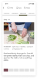
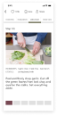

ROLES
- Interaction Designer
- User Interface Designer
DELIVERABLES
- High-fidelity mobile app prototypes of:
- Onboarding sequence
- Meal-planning sequence
- Meal-recording sequence
- Eight micro-interaction details
SPECIFICATIONS
DURATION
- 2 Weeks
TOOLS
- Principle app
- Sketch app
- Photoshop
Overview
Ingrain is a plant-based, meal-planning app for people who wish to transition to plant-based eating to improve their health. Ingrain personalizes the meal-planning experience by creating recipe suggestions based on your preference in food cuisine, taste, and texture. For each recipe, Ingrain will flag the allergens and food dislikes you specify on your profile and allow you to adjust the serving size of any recipe before adding it to your custom grocery list. A food tracker provides guidance in creating balanced meals by allowing you to log your progress towards a daily food servings recommendation that is calculated based on your gender, height, and weight.
On a personal note
Ingrain was conceived as a response to the diabetes epidemic that is presently ravaging North America. Its purpose is to equip those who often feel as though they’re at the mercy of a chronic disease like diabetes—to reverse their diagnosis with plant-based foods. As someone who is living with Type 2 Diabetes, this project addresses a topic that I am passionate about. Designing this meal-planning app to help people heal their bodies with food parallels my own transition to plant-based eating to reverse my diabetes diagnosis.
A case study in three parts
I broke down the design process behind ingrain into three succinct parts. This third part follows the process of leveraging motion design to optimize the user experiences during onboarding, browsing, and logging in food.
See the strategic pivots that redefine the scope of the MVP in Part 1: UX Strategy.
See the evolution of the app structure and skin inPart 2: User Interface Design.
Motion Design
I examined the granular details behind the proper use of animation and applied motion design principles to create high-fidelity interactive prototypes.
Here are playable video previews of a portion of the final interaction sequences:
Onboarding


Onboarding


 

Principles
How motion supports usability
The granular nature of motion design
Drawing upon resources such as Issara Willenskomer’s 12 Principles of UX in Motion and Taras Skytskyi’s Ultimate guide to proper use of animation in UX, I learned the motion design principles behind the great interactions that enhance usability and content legibility with motion design. In particular, I learned to select the appropriate type of object movements that guide the user’s attention to the right place at the right time, and how to avoid jarring movements that look unnatural to the human eye.
Choose wisely and apply consistently
Drawing upon these motion design principles, I created a set of rules concerning which movement types to utilize for specific element transitions. A key consideration in choosing the movement type is that it must direct the user’s attention to the task at hand, thereby supporting the app’s usability.
Here is a break down of the movement types within the ingrain app
Details
Real-time and non-real-time interactions
I took the liberty of taking a cross section of interaction details that are representative of ingrain's interactions. Each interaction is deconstructed into a series of animation curves that govern the movement of major elements during each sequence.
Real-time interactions
To borrow from Issra Willenskomer's terminology, interactions are classified as real-time interactions when it occurs concurrently with input from users. Here are four samplings of ingrain's real-time interactions.
Vertical scroll interaction
Vertical drag interaction

Onboarding
Onboarding
Non-real-time interactions
Interaction occurs after the system registers an in put from the user.
Vertical scroll interaction
Vertical drag interaction
Onboarding
Onboarding